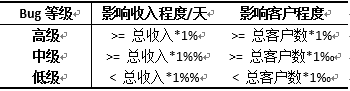
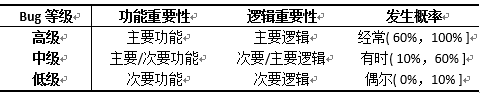
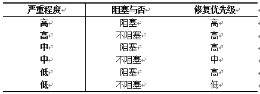

BUG规范
Bug描述¶
标题¶
1) 注明系统或模块名称。 2) 简要叙述问题现象及影响
描述¶
- 重现步骤：重现Bug的最小执行步骤。
- 结果：Bug导致的结果。
- 预期：预期正确的结果。
- 分析：Bug产生的原因，建议代码级。
Bug级别¶
Bug共分为三个级别：高级、中级、低级。
依据影响判定¶
多用于线上系统缺陷等级的判定，主要判断方法如下：
Bug等级 = MAX（影响收入程度，影响客户程度）

1) 影响收入：包括收入异常减少与收入异常增加。 总收入指本服务每天的总收入，估算影响时不考虑运营等因素。 2) 影响客户：包括客户因广告展示异常、消耗波动异常、客户数据异常等产生质疑或投诉。
依据功能判定¶
多用于线下系统缺陷等级的判定，也可用于线上系统，主要判断方法如下：
Bug等级 = AVG（功能重要性，逻辑重要性，发生概率）

1) 功能重要性：功能对于该业务的重要程度。如：
a) 主要功能：广告选取、计费功能。
b) 次要功能：query、日志打印功能。
2) 逻辑重要性：功能的正常处理逻辑与异常处理逻辑。如：
a) 主要逻辑：正常广告选取逻辑。
b) 次要逻辑：异常广告选取逻辑，如广告相应客户id不存在。
3) 发生概率：缺陷所依赖场景出现的可能性。
a) 可通过PV判定法，在BUG处加日志，打一段时间请求，BUG日志/PV日志即为概率。
详细说明¶
高级¶
1) 严重影响收入、客户。 例：
a) 广告选取、排序错误。如：正常广告不展示，下线广告可以展示。
b) 广告展现样式错误。如：广告未标红、广告页面样式严重变形。
c) 广告点击跳转、计费错误。如：广告点击不能跳转到客户页面。
d) 广告入口不可达广告页面。
2) 正常情况下，程序无法提供服务。 例：
a) 无法正常启动或停止。
b) 运行中程序崩溃或进程消失。
c) 进程阻塞，对外无响应，超时严重。
d) 严重资源（内存、句柄）泄露，运行一天内可导致服务异常。
3) 可间接导致本服务或相关服务发生严重问题。 例：
a) 服务无应有的故障处理及恢复机制。
b) 例行reload接口无效。
c) error_log（CRITICAL、ERROR）级别打印错误导致不能正确报警或误报。
d) 核心日志（如：cd¬_ie_log）重要字段打印错误，可导致众多流程错误。
中级¶
1) 高级中的情况仅偶尔发生或程度较轻。 例：
a) 特定条件下，广告选取、排序、展现样式错误。
b) 运行中程序偶尔崩溃或进程消失。
c) 存在资源（内存、句柄）泄露，且不会导致服务异常。
2) 辅助性功能未正确实现。 例：
a) 非例行reload接口、query接口。
b) 非核心日志打印，且有一定影响。如：影响性能、导致部分流程错误。
3) 健壮性、兼容性、安全性等缺陷。
例：
a) 数据文件、配置文件容错。
b) Js兼容性。如：广告页面样式仅在IE6下发生变形。
低级¶
1) 中级2、3的情况仅偶尔发生。
2) UI/UE缺陷，但不会导致客户投诉。
3) 程序依赖的固化外部数据存在错误。
例： a) ip到区域码对应表。
Bug修复优先级¶

Bug规范¶
BUG提交¶
1) 所有Bug均需提交Cynthia管理。
2) 提交Bug需描述清晰、准确，级别正确，参考第1、2章，可辅以截图。 通过代码走读发现的Bug可不写重现步骤。
3) 提交Bug时要注明是否影响收入/客户、判断的理由及影响范围。
BUG定位¶
1) Bug需要定位至代码级别，如短时间内（10分钟）难以定位，可交由开发定位。Web系统暂不要求。
2) QA需保留Bug现场（如：log、data、截图），方便RD定位及修复。
3) 如果Bug存在争议，需要PM、RD、QA及其Leader共同认定。
BUG跟踪¶
1) Bug较多时，QA可要求RD按照修复优先级安排修复Bug，参考第3章。
2) 如果Bug修复成本很高，QA可适当提升修复优先级。
3) 如果Bug很严重或影响范围很大，及时公告相关人员。
4) Bug再次发生时，可将已提交Bug激活。
5) 提交Bug后应注意跟踪，督促RD尽快修复Bug。
6) 所有Bug均应在上线前处理完毕，Cynthia状态为“关闭”或“遗留”。
7) 高级Bug必须要求RD修复，如遗留需要PM、RD、QA、OP二线Leader同时确认。
BUG总结¶
1) 对于有价值的Bug及时进行Bug分享或加入测试潜规则。